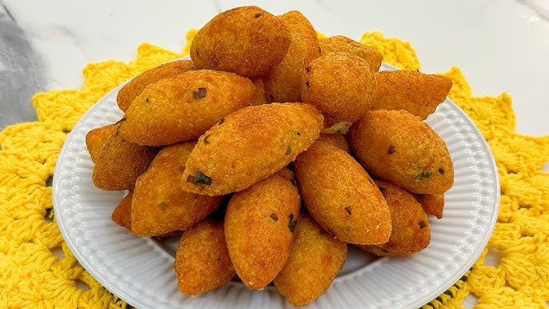

BOLINHO DE AIPIM
O bolinho de aipim é uma verdadeira delícia da culinária capixaba, com sua crocância por fora e maciez por dentro. Feito com mandioca ralada, esse bolinho é simples, mas repleto de sabor, podendo ser recheado com carne, queijo ou até camarão, de acordo com a preferência. Ideal para um lanche ou como aperitivo em reuniões, o bolinho de aipim é um prato que combina tradição e autenticidade, trazendo o gostinho caseiro e aconchegante de uma receita passada de geração em geração.

Ingredientes (20 porções)
- 1 kg de aipim cozido e amassado
- 1 colher de margarina
- 200 g de queijo prato ou mussarela em cubinhos
- óleo para fritar
- 2 ovos
- sal a gosto
- farinha de rosca para empanar
Modo de preparo (15 minutos)
- Coloque em uma vasilha o aipim amassado, 1 ovo, a margarina e o sal, misture tudo muito bem.
- Faça bolinhas no tamanho de sua preferência, amasse a bolinha, coloque um cubinho de queijo e volte a enrolar.
- Passe as bolinhas no ovo que sobrou e empane na farinha de rosca.
- Frite em óleo bem quente até que doure.
- Em seguida, coloque os bolinhos em um prato forrado com papel-toalha para retirar o excesso de óleo.